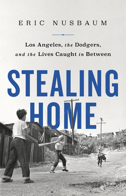

"Stealing Home: Los Angeles, the Dodgers, and the Lives Caught in Between"
- Read on 2021-04-22
- Rating: ️️️️️
- Format: 🎧 (8 hours 37 minutes)
An interesting history of Chavez Ravine, and the events that led to it being nearly empty before the city sold the land for Dodger Stadium. The videos and photos are out there, showing people being hauled away, as they're actively being evicted. For one family (the Arechigas) it came down to a dispute of around $7,000 - not the money itself, but more the principle of it. I can understand their point of view much better now. At the same time, I can also see how the Dodgers (and owner) weren't to blame for the city's mismanagement of the land - at least not nearly as much as Giants fans would like us to believe. Regardless, it all still seems like a real shame to have happened.
- Prior: The Murmur of Bees
- Next: Storm Front